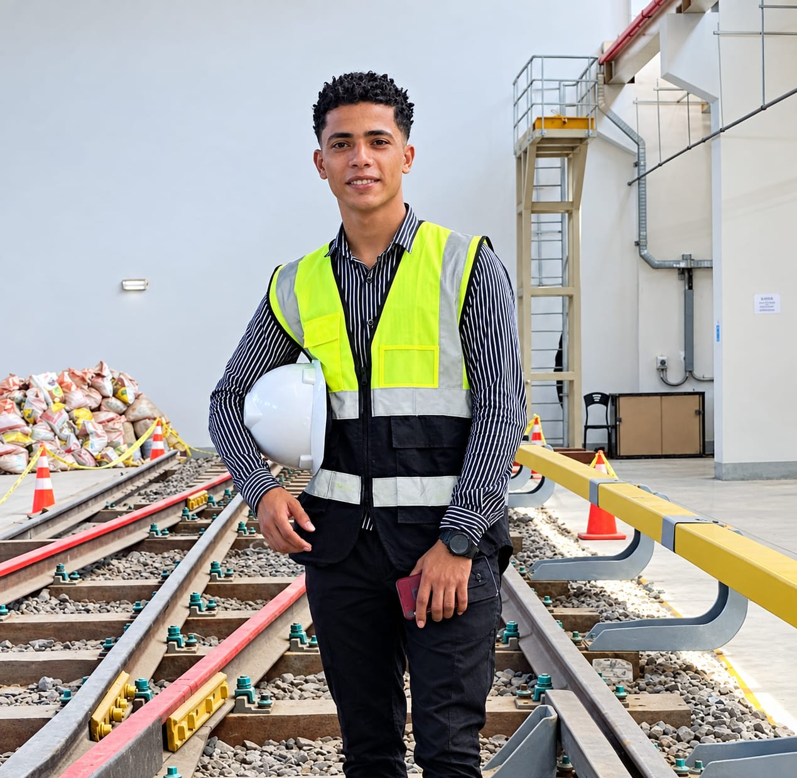
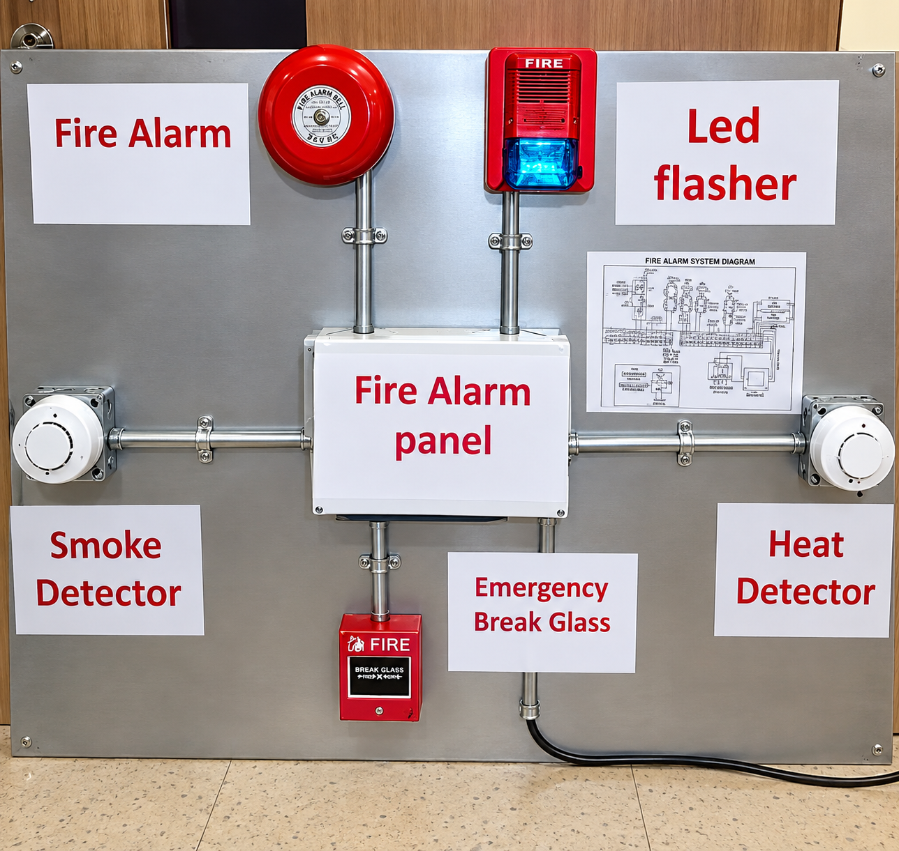

CNC programming, G-code preparation, toolpath optimization, precision machining and production of complex components.
RAILWAY TECHNOLOGY / CNC ENGINEERING
ShawqyAshrafHussein
RAILWAY TECHNOLOGY STUDENT & CNC ENGINEERING SPECIALIST.
01PROFILE / RAILWAY & CNC
3RD YEAR STUDENT
OCTOBER TECHNOLOGICAL UNIVERSITY
SCROLL TO EXPLORE
OCTOBER TECHNOLOGICAL UNIVERSITY
02 / 08CORE COMPETENCIES
EXPERTISE
RAILWAY TECHNOLOGY STUDENT & CNC ENGINEERING SPECIALIST,WORKING ACROSS CNC MACHINING, HYDRAULIC MANUFACTURING, RAILWAY SYSTEMS AND AUTOMOTIVE MECHANICS.
03 / 08PROFESSIONAL PROFILE
PROFILE

RATP Dev Cairo TrainingRailway Technology student and CNC engineering specialist with hands-on experience in hydraulic manufacturing, CNC design and automotive mechanics.
Currently in the third year of the Railway Technology program at October Technological University, with previous technical diplomas in automotive studies.
Registered patent holder with projects spanning fire alarm systems, renewable-energy vehicles and automated solar-panel cleaning.
PROFESSIONCNC DEPARTMENT ENGINEER
STUDIESRAILWAY TECHNOLOGY / 3RD YEAR
RECOGNITIONREGISTERED PATENT HOLDER
04 / 08PROFESSIONAL EXPERIENCE & TECHNICAL TRAINING
EXPERIENCE
CNC Department Engineer
Techno Hydraulic, described as the Middle East's largest hydraulic spare-parts manufacturer and repair company. Responsible for the CNC department, including precision manufacturing, machining and repair of hydraulic parts.
CNC Designer & Programmer
CNC Design Company. Created technical designs using SolidWorks and AutoCAD, translated designs into G-code and optimized toolpaths for production.
Pharmacy Assistant
Retail pharmacy experience supporting inventory and dispensing processes, with a focus on accuracy and customer communication.
ERMAS Train Maintenance
Technical training with ERMAS in railway maintenance and service.
RATP Dev & National Authority for Tunnels
Operational and technical training in modern metro and railway infrastructure.
Arab Contractors
Technical training with Arab Contractors.
Akhbar El Yom Academy
Technical training at Akhbar El Yom Academy.
05 / 08EDUCATION
EDUCATION
B.Sc. in Railway Technology
October Technological University (OTU), Railway Technology program.
Associate Degree / Above-Intermediate Diploma
Banha Technical Industrial Institute, Advanced Automotive Department.
Technical Secondary Diploma
Industrial School, three-year system, Automotive Mechanics Department.
06 / 08TECHNICAL SKILLS & SOFTWARE
SKILLS
CAD / CAM SOFTWARE
01SolidWorksDESIGN
02AutoCADDESIGN
03FluidSIMSIMULATION
04PowerShapeCAD / CAM
ENGINEERING
05CNC ProgrammingG-CODE & TOOLPATHS
06Advanced CNC Machining & OperationsMANUFACTURING
07Hydraulic Systems Manufacturing & RepairHYDRAULICS
08Automotive Mechanics & DiagnosticsAUTOMOTIVE
09Railway Infrastructure FundamentalsRAILWAY
10Industrial Prototyping & DesignENGINEERING
11Renewable Energy Systems IntegrationENERGY
07 / 08INNOVATIONS & PROJECTS
PROJECTS
01↗
02↗
03↗
FIRE ALARM SYSTEM
AUTOMATED SAFETY SYSTEMRENEWABLE ENERGY-POWERED VEHICLE
SUSTAINABLE ENERGY PROTOTYPEAUTOMATED SOLAR PANEL CLEANING ROBOT SYSTEM
SOLAR EFFICIENCY & AUTOMATIONREGISTERED PATENT HOLDER. Designed and developed technical projects in automated safety, renewable energy and solar-panel maintenance.
TECHNICAL
PROJECTS
PROJECTS

LET'S CONNECTCONTACT
CONTACT
SHAWQY ASHRAF HUSSEIN
RAILWAY TECHNOLOGY STUDENT & CNC ENGINEERING SPECIALIST